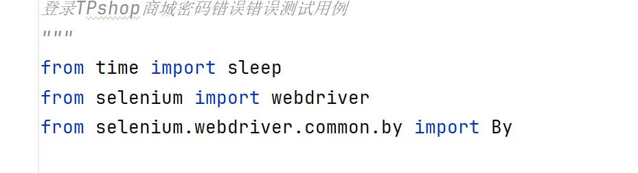
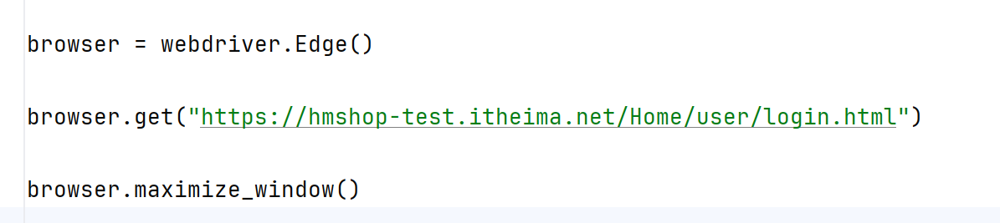
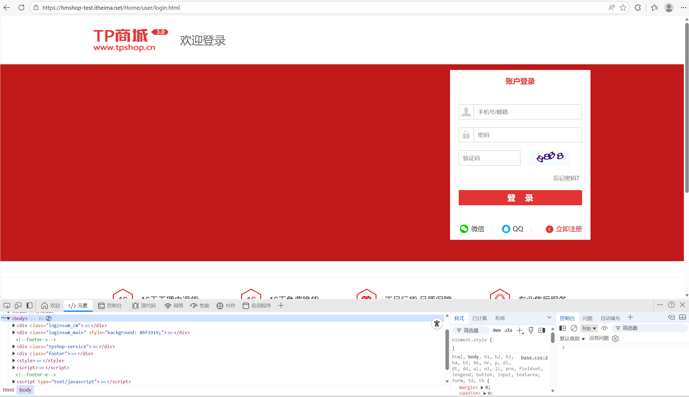
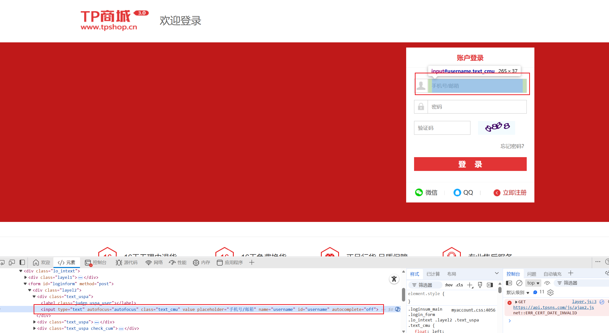
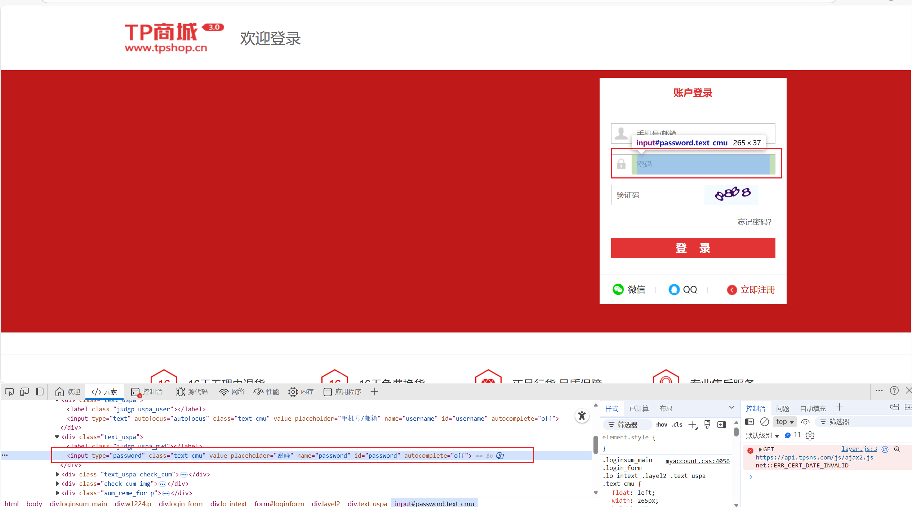
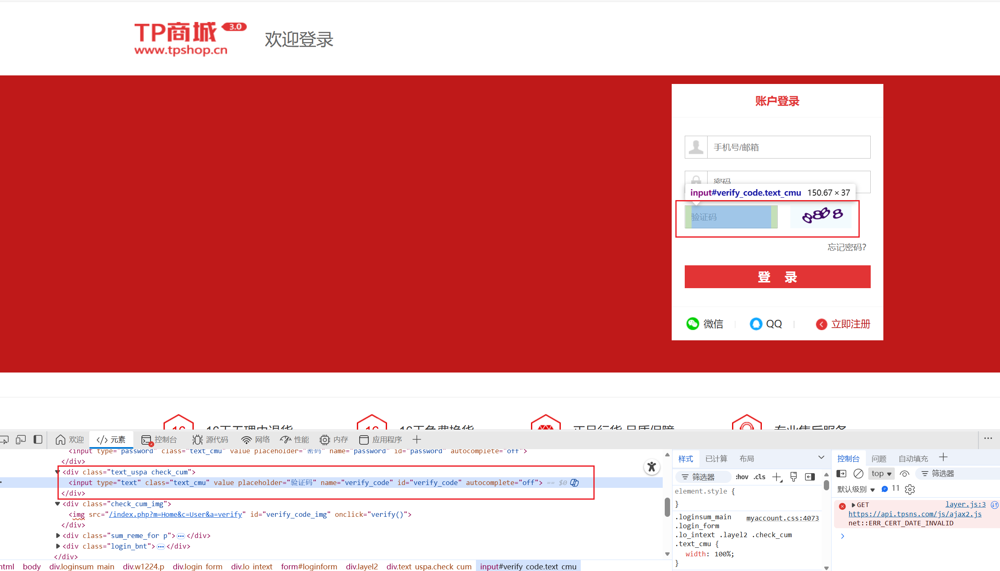
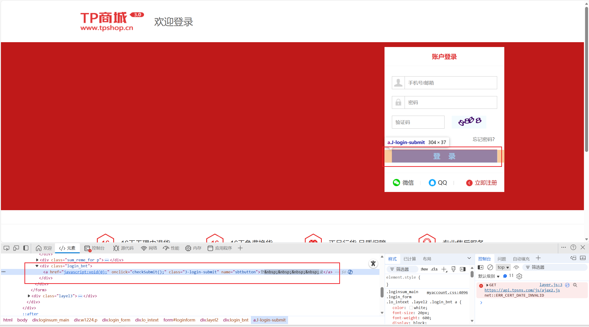
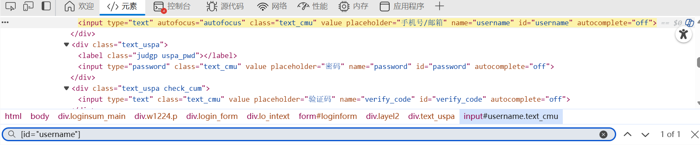

本模块主要分享如何利用python实现简单的自动化网站登录测试, 可用于检验网站是否登录成功/失败, 以及失败原因。
在实际项目中,网站的"注册与登录功能"一直是一个重点的测试项目,直接决定了用户能否高效,安全的进入
网站, 但多次的登陆显得过于繁琐,因此该模块致力于实现网站的自动化登录,减少了人力资源的消耗。
但此篇所介绍的内容仅仅只作为最简单,最易懂的方法进行,并未采用任何的"测试框架"。
在实际项目中是完全不可取的,实际项目中往往会采用类似PO框架的代码结构形式。以后有机会再说...
首先, 我们需要做一些准备工作。
1. 准备好一个测试网站,可以是百度一下,也可以是别的网站,在本篇教程中,以商城登录为例子
2. 在你的python脚本里导入"time"和"selenium"模块, 如果没有的话去找镜像网站下载,不再赘述。
3.准备好一个浏览器(Google,Edge,FireFox等),推荐Edge浏览器(注意,浏览器的不同会导致代码有差异,后面还会提及)
接下来, 我们正式开始编写"test_login_userPwd_not_correct.py"脚本。
第一步,先导包。按如下分别导入"sleep","webdriver"和"By"模块

from time import sleep
from selenium import webdriver
from selenium.webdriver.common.by import By
第二步, 获取浏览器(Edge,Chrome,FireFox等), 并且告诉浏览器要测的网址, 即"https://hmshop-test.itheima.net/Home/user/login.html"。
browser = webdriver.Edge()
browser.get("https://hmshop-test.itheima.net/Home/user/login.html")
browser.maximize_window()







#定位用户名
browser.find_element(By.ID, 'username')
#定位密码
browser.find_element(By.ID, 'password')
#定位验证码
browser.find_element(By.ID, 'vericify_code')
#定位登录按钮
browser.find_element(By.name, 'sbtbutton')
However,仅仅定位元素是不够的,还需要填写相关字段,于是可以用send_keys("114514")来输入内容;
利用click()来进行点击操作
# 输入用户名
browser.find_element(By.ID, 'username').send_keys('13800001111')
# 输入密码
browser.find_element(By.ID, 'password').send_keys('114514')
# 输入验证码
browser.find_element(By.ID, 'verify_code').send_keys('8888')
sleep(2)
# 点击登录
browser.find_element(By.NAME, 'sbtbutton').click()
from time import sleep
from selenium import webdriver
from selenium.webdriver.common.by import By
browser = webdriver.Edge()
browser.get("https://hmshop-test.itheima.net/Home/user/login.html")
browser.maximize_window()
# 隐式等待10s
browser.implicitly_wait(2)
# 输入用户名
browser.find_element(By.ID, 'username').send_keys('13800001111')
# 输入错误密码
browser.find_element(By.ID, 'password').send_keys('114514')
# 输入验证码
browser.find_element(By.ID, 'verify_code').send_keys('8888')
sleep(2)
# 点击登录
browser.find_element(By.NAME, 'sbtbutton').click()
sleep(2)
browser.quit()
至此, 一个简单自动化测试功能就写好了。 方法不唯一, 在此只分享个人的拙见。感谢阅读！
⬅ 返回主页